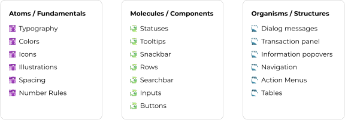
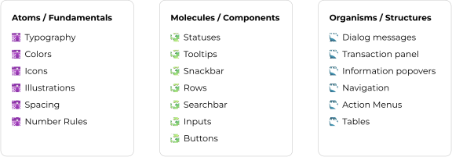

A new visual language & design system
March 2020 - soft launch in August 2021
March 2020 - soft launch in August 2021

As part of the Console Re-design Project, one of the goals was to re-conceptualize the visual language and create the design system for the new platform.
Only designer
4 front end developers
The previous visual language was dark and had the look and feel of many anti-virus and hacking platforms that alluded to: danger, threats, the dark and cyber world. Instead we wanted to communicate: fintech, innovation, and a hub in which you start your day.
We needed a solid foundation that would make sure the design was unified in the product and set the ground for the team to grow one day, maintaining design integrity and scalability across the platform. Design Systems were becoming common practice in leading companies around this time, and I had to jump on the wagon.
I was the only designer at the company, meaning I had my hands full and could not devote full-time to the design system.
We had a very short timeline, as we needed to launch the new app as quickly as possible in order to kill competition. So the design system had to be created simultaneously with the design of the product (read about that process here).
I migrated from Sketch to Figma in the middle of design, which meant rebuilding all components between designing - but it was worth it!

Before starting to build the design system, we needed to better design the product values to refine exactly what the new visual look would communicate. To do so, I held an activity with the product team and other stakeholders in which we brainstormed what we each think the Fireblocks product represents and wrote down certain word on different post-its. Then, we clumped common post-its together and used dot voting to narrow down a list of our top words. Here was what we came up with:

After that we further explored each word and any associations we have with that word. I put all the words into a hat and had each person had to pick one out and then come up with: one digital reference that embodied this word, one physical reference (non digital), and how they thought this value integrated with the product. This exercise was fun and involved the team in coming up with some basic ideas, references, and values for the new visual language that the design system would utilize.
I started with collecting references and creating a mood board of concepts. For inspiration, I looked at our competitors, other tools used by our users, products in the crypto industry, products in fin-tech, and other products that were daily platforms for professionals.
From there I created a few concept UI images, testing out some colors, typography and buttons within the layout we designed for in the console. I showed the concepts to stakeholders and marketing, and after a few iterations I had a basic visual direction. My work started loose and became tighter as I went along.

I was inspired by the Atomic Design System Methodology by Bob Frost. In fact it blew my mind. Genius! It helped me both in how to approach and structure the design system.
 

The basic building blocks of the design system.
“Heebo”, a clean modern font that works well with numbers, this I intended to use for most of the system. I chose another font - Futura, to use sparingly in headlines in order to spice up the system and give it that neo-contemporary feel communicating: “fin-tech”, modern, cutting edge, serious but non-traditional. I also liked the symmetrical and round shapes of Futura, which paired well with the shape motif in the brand & logo.
This took me a few iterations to get right, and I made some mistakes along the way.
At first, I found it difficult to pre-define the styles without having started designing some screens of the platform. So in the beginning, I went about adding a new style to the system every time I felt I needed another one when designing. However I learned that this quickly confused me, I had too much freedom and I ended up creating styles that were too close together and which then created names that didn’t make sense.
So, I changed methods, choosing many predefined sizes for me to choose from and sometimes slightly tweaked them as I designed. After a few months, when the platform design was more established, I saw that many of these styles I didn’t use at all I cut them out of the system all together, leaving a more lean and clean type system.